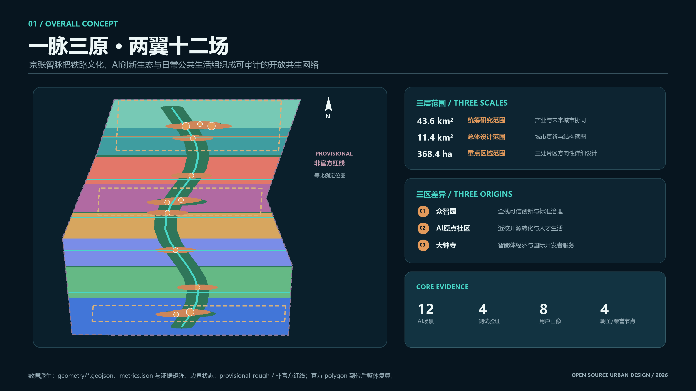
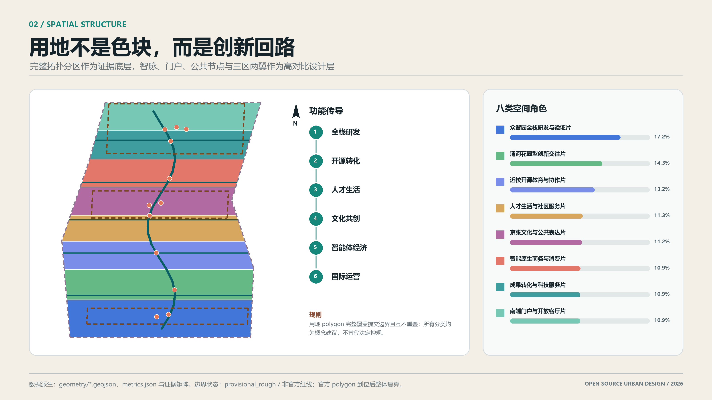
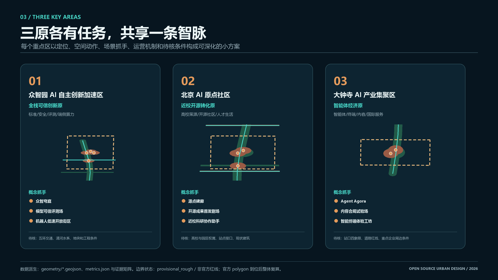
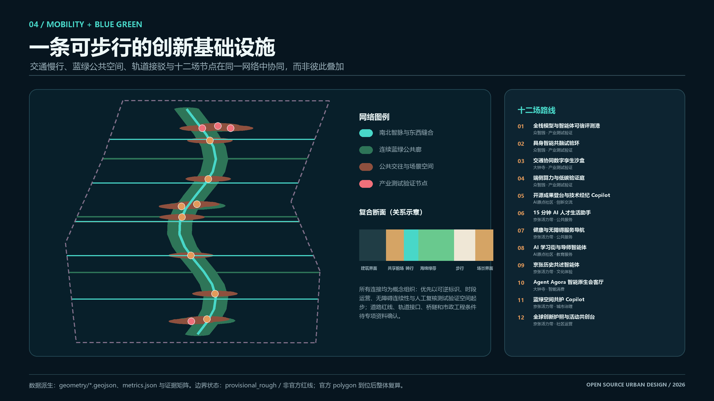
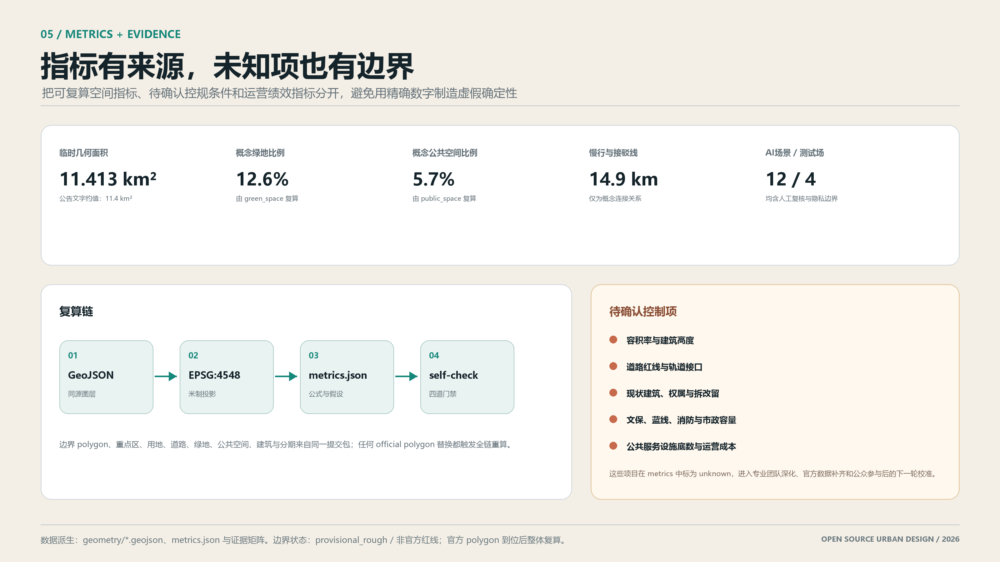

八类空间角色
研发、教育、社区、文化、商业、科技服务、绿地和门户完整覆盖提交边界。
一脉三原、两翼十二场。以京张铁路遗产为时间轴，以开放协作与可信AI为运行协议，把三区两翼转译为可步行、可测试、可复核、可长期运营的城市共同体。
当前使用仓库提供的 provisional rough polygon。它支持生成、展示、自检和内容评审入口，但不是官方红线、审批依据或精确面积依据；官方 polygon 到位后将整体复算。

京张智脉不是一条装饰性轴线，而是文化叙事、开放测试、公共交往、人才生活和长期运营共同使用的空间协议。三层范围分别承担战略、结构与片区深化。
43.6平方公里统筹研究范围组织产业协同，11.4平方公里总体设计范围形成城市更新结构，368.4公顷重点区域范围承载三处方向性详细设计。临时边界以淡紫虚线降级表达。

众智园面向全栈可信创新，AI原点社区面向近校开源转化，大钟寺面向智能体经济和国际开发者服务；三者通过京张智脉共享公共空间、人才服务和品牌资产。

八类用地角色构成完整拓扑分区；概念建筑基底只表达载体组团，不对应现状单体拆改留。更新项目优先采用可逆、共享、时段复用和运营先行的方法。
研发、教育、社区、文化、商业、科技服务、绿地和门户完整覆盖提交边界。
保留与适应性再利用优先，新增只作为缺口补全方向，依赖现状调查和权属确认。
公共脉络、场景节点、服务驿站、重点区客厅和长期品牌运营构成可拆分项目包。
南北智脉承担连续步行、骑行、文化导览和公共体验；东西连接回应轨道接驳、校区园区街区缝合。所有道路、桥隧和市政表达均为概念关系，待专项深化。

场景覆盖产业测试、科研服务、公共服务、文化体验、城市治理、智能消费与社区运营；其中四个为产业测试验证场景。所有关键决策必须人工复核。
四个地标不追求娱乐化奇观，而以开源贡献、可信AI、铁路记忆和开发者社区为内容，形成可持续更新的荣誉展示与公共讨论界面。
AI原点社区｜记录开放协作起点、可追溯开源成果、贡献者与版本档案
众智园｜显示测试状态、边界与复核结论的低扰动可信验证界面
大钟寺｜连接产品、城市与公众，轮换展示原型、失败复盘和公众评价
京张活力带｜以经核验史料串联铁路、创新与 AI 文化的多语时间轴
可复算指标来自EPSG:4548几何计算；控规、现状建筑、道路红线、文保、市政和权属等待补项明确标记 unknown。六项智能体任务均形成正文、图层、图纸和展示证据。

来源登记说明每条资料能支持什么、不能支持什么。假设清单把缺边界、控规、道路、建筑、文保、市政和公共服务底数转化为下一轮专业深化任务。
用于任务、三层范围文字与公告面积约值；不提供精确 polygon。
用于六项智能体任务、场景、品牌、运营和边界条款。
仅用于生成、展示、自检和方向性讨论；非官方红线。
用于城市设计、控规深度和用地分类语言，不生成项目特定审定指标。